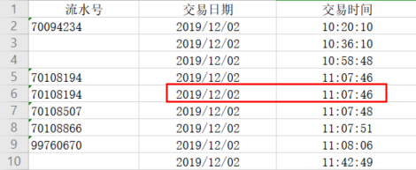
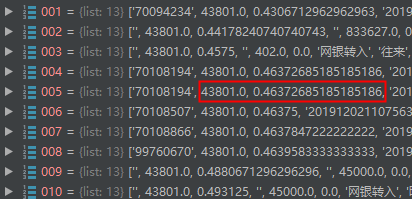

问题描述
业务场景中，需要从Excel中提取出文件内容，在使用Python xlrd模块解析Excel的时候，文件中的时间格式变成了浮点小数。
原始数据如下图中所示：

经xlrd解析之后的数据如下图所示：

从以上两张图中可以看出，年月日 ‘2019/12/02’ 变成了 43801.0，时分秒 ‘11:07:46’ 变成了0.46372685185185186。但是，在用xlrd解析其他Excel文件的时候，明没有出现这种问题，具体原因还不明确，推断大概是因为Excel文件格式的原因？
原因分析
在翻了xlrd官网文档之后，有一页关于Dates in Excel spreadsheets的介绍，Excel中的日期存在以下问题：
- 日期没有用单独的数据类型来存储，而是用浮点数来存储的
- 在Windows系统中，Excel在默认情况下，存储的日期是从1899-12-31T00:00:00到所存日期的天数。而Macintosh（Mac OS）中，默认是从1904-01-01T00:00:00开始计算的。
看到这里，我们计算一下 2019/12/02 对应的浮点数43801.0，刚好是从1899-12-31T00:00:00 到 2019/12/02 所走过的天数。而 11:07:46 对应的浮点数0.46372685185185186，则是从 00:00:00 到 11:07:46 所走过的天数。
解决方法
那么怎么将浮点数转成标准的日期类型呢？xrld模块提供了xldate_as_datetime(xldate, datemode)函数，来把Excel date/time number转成datetime.datetime。
- xldate：Excel中的date/time number
- datemode：就是上面提到的两种日期模式：0代表1900-based模式；1代表1904-based模式。
1 | date_ymd = xlrd.xldate_as_datetime(43801.0, data.datemode) |
最后将date_ymd的年月日部分和date_hms的时分秒部分拼接在一起就是标准的时间格式了。
如果在解析Excel的时候，就要将浮点类型的时间转成标准日期格式，那该怎么处理呢？下面是对Excel sheet中Cell内容进行日期格式化的代码：
1 | # 打开一个电子表格文件进行数据提取 |
上面代码，关键是看第一个if判断的第一个条件table.cell(row, col).ctype == 3，sheet中的Cell这里的ctype有7中类型：
| 类型符号 | 类型编号 | 对应的Python值 |
|---|---|---|
| XL_CELL_EMPTY | 0 | empty string ‘’ |
| XL_CELL_TEXT | 1 | a Unicode string |
| XL_CELL_NUMBER | 2 | float |
| XL_CELL_DATE | 3 | float |
| XL_CELL_BOOLEAN | 4 | int; 1 means TRUE, 0 means FALSE |
| XL_CELL_ERROR | 5 | int representing internal Excel codes; for a text representation,refer to the supplied dictionary error_text_from_code |
| XL_CELL_BLANK | 6 | empty string ‘’. Note: this type will appear only when open_workbook(…,formatting_info=True) is used. |
代码中判断是否等于3，就是判断当前Cell的内容是否是Date类型，如果是Date类型，我们就对其进行处理。